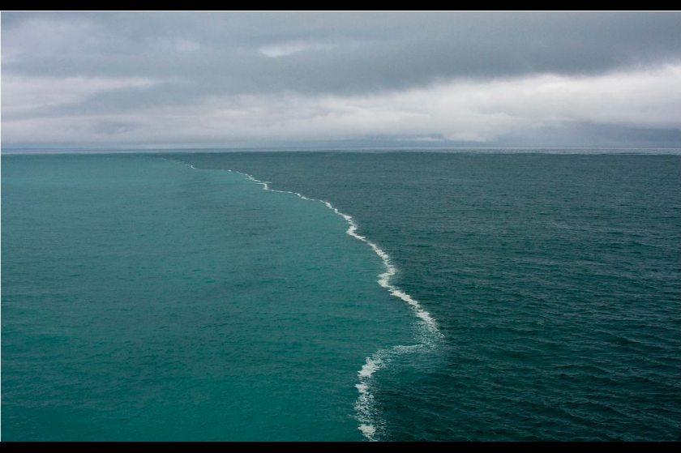

Science• Oct 11, 2014

A picture from the Gulf of Alaska that has been making the rounds on the Internet for the last few years, shows a strange natural phenomenon that occurs when heavy, sediment-laden water from glacial valleys and rivers pours into the open ocean. There in the gulf, the two types of water run into each other, a light, almost electric blue merging with a darker slate-blue.
Informally dubbed “the place where two oceans meet,” the explanation for the photo is a simple one, though there are many misconceptions about it, including that catchy title. In particular on popular link-sharing website Reddit, where users have on multiple occasions erroneously attributed the photo’s location as “Where the Baltic and North Sea meet” and the two types of water as being completely incapable of ever mixing, instead perpetually butting against each other like a boundary on a map.